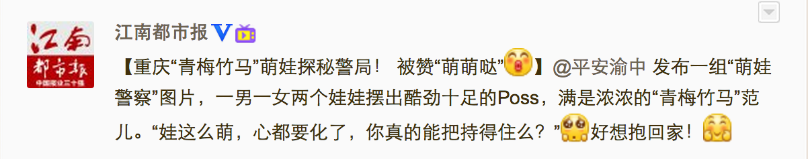
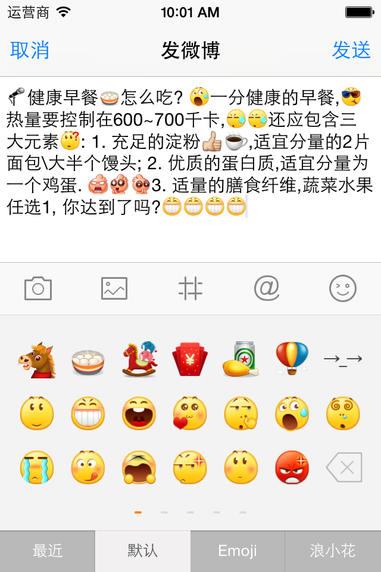
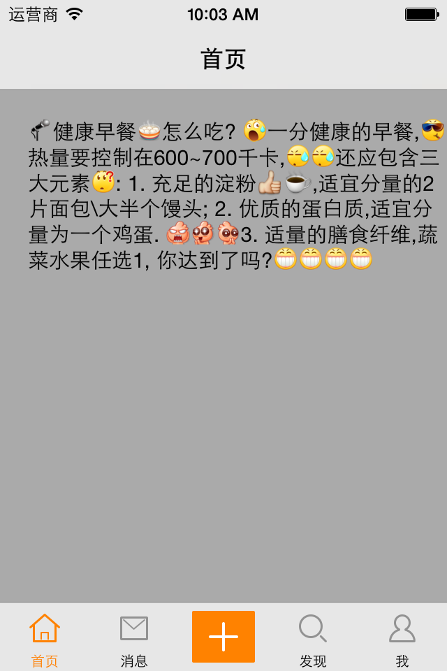

实现新浪微博图文混排效果
通常，我们都会有图片和文字混合起来展示的需求。像杂志中展示一篇文章。QQ发送带表情文字的信息。微博的展示等等… 这里，我们简单的实现一下表情和文字的混合显示。模仿新浪微博，实现效果如下图：

我分为三大步骤：
- 将表情插入到编辑框中
- 将带有表情的富文本转换为带有表情描述的普通文本，并发送给服务器
- 从服务器接收带有表情描述的普通文本，将表情描述解析成对应的表情
查看完整代码，请点击这里
将表情插入到编辑框
微博编辑框我们使用GYEmotionTextView，它继承自GYTextView, GYTextView继承自UITextView。GYTextView主要是增加了一个占位文字的功能。我们给GYEmotionTextView增加一个添加表情的方法appendEmotion:。具体实现如下：
// GYEmotionTextView.m
/**
* 在微博编辑框添加表情时调用
*
* @param emotion 添加的表情
*/
-(void)appendEmotion:(GYEmotion *)emotion
{
if (emotion.code) { // Emoji表情
[self insertText:emotion.emoji];
} else { // 图片表情
NSMutableAttributedString *attributeText = [[NSMutableAttributedString alloc] initWithAttributedString:self.attributedText];
// 创建一个带有图片表情的富文本
GYEmotionAttachment *attachment = [[GYEmotionAttachment alloc] init];
attachment.emotion = emotion;
NSString *name = [NSString stringWithFormat:@"%@/%@", emotion.directory, emotion.png];
attachment.image = [UIImage imageWithName:name];
attachment.bounds = CGRectMake(0, -3, self.font.lineHeight, self.font.lineHeight);
NSAttributedString *emotionStr = [NSMutableAttributedString attributedStringWithAttachment: attachment];
// 记录表情的插入位置
int insertIndex = self.selectedRange.location;
// 插入表情到光标所在的位置
[attributeText insertAttributedString:emotionStr atIndex:insertIndex];
// 设置字体
[attributeText addAttribute:NSFontAttributeName value:self.font range:NSMakeRange(0, attributeText.length)];
self.attributedText = attributeText;
// 让光标回到新插入表情的后面
self.selectedRange = NSMakeRange(insertIndex + 1, 0);
}
}
当我们从表情键盘选中一个表情时，就会在微博编辑框的光标位置插入对应的表情。GYEmotionAttachment集成自NSTextAttachment，NSTextAttachment是iOS7新增的类，有了它，就可以很方便的操控富文本了。这样，我们就可以对微博进行编辑了，效果如下：

当完成编辑后，就可以发送微博了。但是发送给服务器的一般都是普通的文本。因此，我们就不能这样发送了，需要将这个富文本，转换为普通的文本。
将带有表情的富文本转换为带有表情描述的普通文本，并发送给服务器
如何将富文本转换为普通文本呢？NSAttributedString.h有一个对象方法- (void)enumerateAttributesInRange:(NSRange)enumerationRange options:(NSAttributedStringEnumerationOptions)opts usingBlock:(void (^)(NSDictionary *attrs, NSRange range, BOOL *stop))block， 有了它，我们可以对富文本进行遍历，它会自动对这个文本进行切割，将普通文本和文本附件分离出来，通过block传递给我们,我们就可以通过字典attrs，通过关键字NSAttachment判断是否是表情。如下：
NSMutableString *string = [NSMutableString string];
// 获得微博编辑框的富文本
NSAttributedString *attributeText = self.attributedText;
// 遍历富文本，将表情转换为文字描述
[attributeText enumerateAttributesInRange:NSMakeRange(0, self.attributedText.length) options:0 usingBlock:^(NSDictionary *attrs, NSRange range, BOOL *stop) {
GYEmotionAttachment *attachment = attrs[@"NSAttachment"];
if (attachment) { //有表情
[string appendString:attachment.emotion.chs];
} else { // 没有表情
// 根据range范围获得富文本的文字内容
NSString *subStr = [attributeText attributedSubstringFromRange:range].string;
[string appendString:subStr];
}
}];
这样我们就得到了带有表情描述的普通文本string，可以将它发送给服务器了。需要注意的是GYEmotionAttachment是我们自定义的，它继承自NSTextAttachment，给它添加一个属性emotion，就可以非常方便的获得传递过来的表情是哪个，然后找到对应的文字描述，进行字符串拼接。
从服务器接收带有表情描述的普通文本，将表情描述解析成对应的表情
我们其实就已经完成发送微博的功能了，可以该干嘛干嘛了。好好Happy一下了。OK，happy完后，如果我们需要浏览浏览别人的微博，就要向新浪的服务器发送请求，然后新浪将微博数据发送给我们，好，和发微博一样，服务器给客户端发送的数据一般也是文本。是没有表情的。因此，在客户端，我们需要对文本进行解析，转换成带有表情的微博。OK，世界瞬间又成了彩色的了。不过，这里，就比刚才稍显复杂了。要对文本进行解析，首先需要知道该怎么解析，解析成什么。像表情，一般是通过比如这样[哈哈]进行描述的。因此，我们需要对这样的文本进行查找，并替换。我们使用正在表达式，并使用第三方框架RegexKitLite。对文本进行匹配，将每一段普通文本和表情描述保存在数组results中，然后对数组进行排序。如下：
/**
* 根据文本计算出匹配结果
*
* @param text 文本
*
* @return 匹配结果数组
*/
- (NSArray *)regexResultsWithText:(NSString *)text
{
// 存储匹配结果
NSMutableArray *results = [NSMutableArray array];
// 设置表情匹配格式
NSString *emotionRegex = @"\\[[a-zA-Z0-9\\u4e00-\\u9fa5]+\\]";
//遍历文本，根据表情格式匹配表情
[text enumerateStringsMatchedByRegex:emotionRegex usingBlock:^(NSInteger captureCount, NSString *const __unsafe_unretained *capturedStrings, const NSRange *capturedRanges, volatile BOOL *const stop) {
GYRegexResult *regexR = [[GYRegexResult alloc] init];
regexR.string = *capturedStrings;
regexR.range = *capturedRanges;
regexR.emotion = YES;
[results addObject:regexR];
}];
//遍历文本，根据表情格式匹配非表情
[text enumerateStringsSeparatedByRegex:emotionRegex usingBlock:^(NSInteger captureCount, NSString *const __unsafe_unretained *capturedStrings, const NSRange *capturedRanges, volatile BOOL *const stop) {
GYRegexResult *regexR = [[GYRegexResult alloc] init];
regexR.string = *capturedStrings;
regexR.range = *capturedRanges;
regexR.emotion = NO;
[results addObject:regexR];
}];
// 对匹配结果进行排序,(根据range的location，从小到大)
[results sortUsingComparator:^NSComparisonResult(GYRegexResult *r1, GYRegexResult *r2) {
int loc1 = r1.range.location;
int loc2 = r2.range.location;
return [@(loc1) compare:@(loc2)];
}];
return results;
}
得到这个数组后，就可以进行富文本的拼接了。如下：
/**
* 将带有表情描述的普通文本转换为富文本
*/
- (NSAttributedString *)attributeTextWithText:(NSString *)text
{
NSMutableAttributedString *attributeText = [[NSMutableAttributedString alloc] init];
// 根据本文计算出匹配结果
NSArray *regexResults = [self regexResultsWithText:text];
// 根据匹配结果拼接文本
[regexResults enumerateObjectsUsingBlock:^(GYRegexResult *regexResult, NSUInteger idx, BOOL *stop) {
if (regexResult.isEmotion) { // 表情
GYEmotionAttachment *attachment = [[GYEmotionAttachment alloc] init];
attachment.emotion = [GYEmotionTool emotionWithDesc:regexResult.string];
attachment.bounds = CGRectMake(0, -3, GYStatusTextFont.lineHeight, GYStatusTextFont.lineHeight);
NSAttributedString *subStr = [NSAttributedString attributedStringWithAttachment:attachment];
[attributeText appendAttributedString:subStr];
} else { // 非表情, 普通文本
NSMutableAttributedString *subStr = [[NSMutableAttributedString alloc] initWithString:regexResult.string];
[attributeText appendAttributedString:subStr];
}
}];
// 设置字体
[attributeText addAttribute:NSFontAttributeName value:GYStatusTextFont range:NSMakeRange(0, attributeText.length)];
return attributeText;
}
这样，得到了富文本attributeText，好了，就可以直接进行展示了。如下图：
